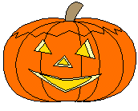

|
Etcetera
Halloween
is an annual celebration, but just what is it actually a celebration
of? And how did this peculiar custom originate? Is it, as
some claim, a kind of demon worship? Or is it just a harmless
vestige of some ancient pagan ritual?
The
word itself, "Halloween," actually has its origins
in the Catholic Church. It comes from a contracted corruption
of All Hallows Eve. November 1, "All Hollows Day"
(or "All Saints Day"), is a Catholic day of observance
in honor of saints. But, in the 5th century BC, in Celtic
Ireland, summer officially ended on October 31. The holiday
was called Samhain (sow-en), the Celtic New year.
One
story says that, on that day, the disembodied spirits of all
those who had died throughout the preceding year would come
back in search of living bodies to possess for the next year.
It was believed to be their only hope for the afterlife. The
Celts believed all laws of space and time were suspended during
this time, allowing the spirit world to intermingle with the
living.
Naturally,
the still-living did not want to be possessed. So on the night
of October 31, villagers would extinguish the fires in their
homes, to make them cold and undesirable. They would then
dress up in all manner of ghoulish costumes and noisily paraded
around the neighborhood, being as destructive as possible
in order to frighten away spirits looking for bodies to possess.
Probably
a better explanation of why the Celts extinguished their fires
was not to discourage spirit possession, but so that all the
Celtic tribes could relight their fires from a common source,
the Druidic fire that was kept burning in the Middle of Ireland,
at Usinach.
Some
accounts tell of how the Celts would burn someone at the stake
who was thought to have already been possessed, as sort of
a lesson to the spirits. Other accounts of Celtic history
debunk these stories as myth.
The
Romans adopted the Celtic practices as their own. But in the
first century AD, they abandoned any practice of sacrificing
of humans in favor of burning effigies.
The
thrust of the practices also changed over time to become more
ritualized. As belief in spirit possession waned, the practice
of dressing up like hobgoblins, ghosts, and witches took on
a more ceremonial role.
The
custom of Halloween was brought to America in the 1840's by
Irish immigrants fleeing their country's potato famine. At
that time, the favorite pranks in New England included tipping
over outhouses and unhinging fence gates.
The
custom of trick-or-treating is thought to have originated
not with the Irish Celts, but with a ninth-century European
custom called souling. On November 2, All Souls Day, early
Christians would walk from village to village begging for
"soul cakes," made out of square pieces of bread
with currants. The more soul cakes the beggars would receive,
the more prayers they would promise to say on behalf of the
dead relatives of the donors. At the time, it was believed
that the dead remained in limbo for a time after death, and
that prayer, even by strangers, could expedite a soul's passage
to heaven.
The Jack-o-lantern custom probably comes from Irish folklore.
As the tale is told, a man named Jack, who was notorious as
a drunkard and trickster, tricked Satan into climbing a tree.
Jack then carved an image of a cross in the tree's trunk,
trapping the devil up the tree. Jack made a deal with the
devil that, if he would never tempt him again, he would promise
to let him down the tree.
According
to the folk tale, after Jack died, he was denied entrance
to Heaven because of his evil ways, but he was also denied
access to Hell because he had tricked the devil. Instead,
the devil gave him a single ember to light his way through
the frigid darkness. The ember was placed inside a hollowed-out
turnip to keep it glowing longer.
The
Irish used turnips as their "Jack's lanterns" originally.
But when the immigrants came to America, they found that pumpkins
were far more plentiful than turnips. So the Jack-O-Lantern
in America was a hollowed-out pumpkin, lit with an ember.
So, although some pagan groups, cults, and Satanists may have
adopted Halloween as their favorite "holiday," the
day itself did not grow out of evil practices. It grew out
of the rituals of Celts celebrating a new year, and out of
Medieval prayer rituals of Europeans. And today, even many
churches have Halloween parties or pumpkin carving events
for the kids. After all, the day itself is only as evil as
one cares to make it.
©
1995-2000 by Jerry Wilson;
References:
Charles Panati, Extraordinary Origins of Everyday Things,
1987; and Dr. Joseph Gahagan, University of Wisconsin-Milwaukee,
Personal letter, 1997
|